琉波前哨站 / 潮汐之子
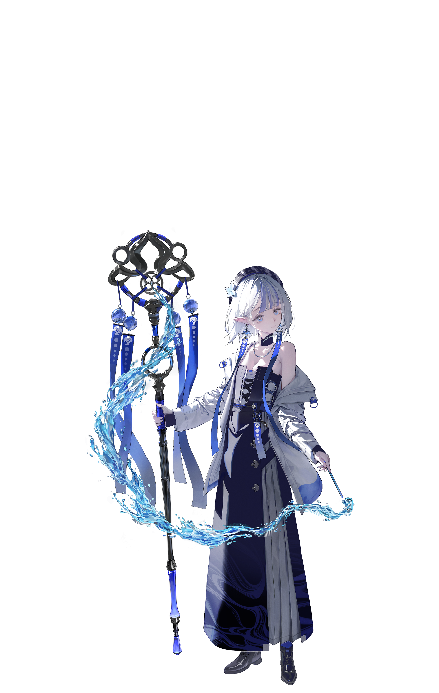
前哨站站長的女兒，也是能操控水魔法的潮汐之子。她不常主動交談，更常透過水氣流動去感知周遭。
正式版目前以六位角色構成核心陣容。她們來自前哨站、赤城與特林部落，各自綁定不同的技能改地方式與強化攻擊條件，讓配隊本身就成為戰術選擇。

正式企畫書中的角色介紹已經非常明確：武器、種族、陣營、技能方向與強化攻擊都會直接影響隊伍組法。

前哨站站長的女兒，也是能操控水魔法的潮汐之子。她不常主動交談，更常透過水氣流動去感知周遭。


赤城醫療部門的血族文書官。外表幹練安靜，實際上內心戲很多，經常被迫處理一堆莫名其妙的麻煩。

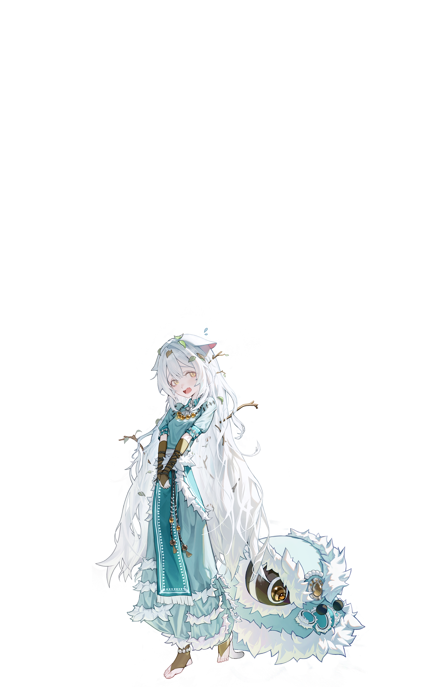
膽子很小、被嚇到就會炸毛的貓人少女。她的獅子裝原本只是生存策略，後來卻意外擁有了自我意識。

曾是四海聞名的傳奇船長，卻因一場意外失去記憶與同伴。她在荒島撿到的古書，如今仍持續牽動裂縫異象。


血族高等貴族，對繁瑣禮儀毫無興趣，卻保留了最華麗的貴族風貌。她極度熱愛美食，也會為了食物與廚師直接開戰。


身材高挑、性格直率爽朗的特林戰士。她總是第一個站出來保護同伴，也是赤城裂縫第一時間的阻擊者。
正式版的角色能力幾乎都和高度、位移或條件切換有關，技能卡正好替這些差異做出最直接的視覺標記。
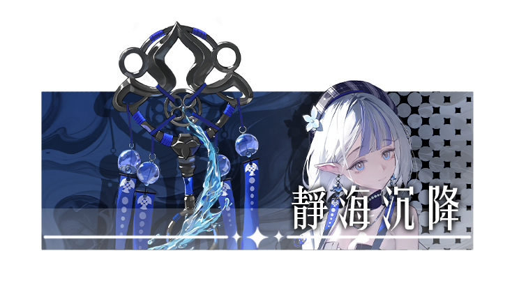
四方向選擇一路降地，同時對敵方造成傷害，節奏非常適合開路與拆地形。

能把隊友拉向關鍵斜十字位，並把位置固定成等級 2，支援味非常濃。
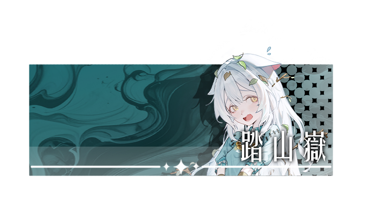
一次指定三個位置變成等級 3，再依序跳入，能把路線與高度一起重寫。

能選定全場 4x4 區域延時升地並造成傷害，是很直接的控場型技能。
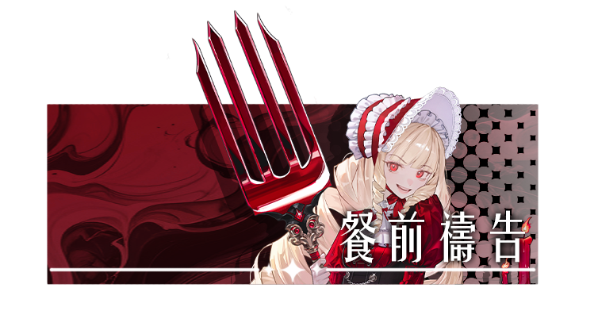
將自身腳底與指定方向抬成等級 2，命中時還能留下專屬印記。
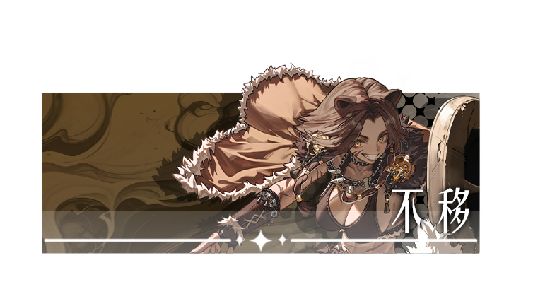
把周圍地形壓成等級 1，並給範圍內友軍防禦，是很明確的站線核心。
這批 GIF 直接取自 character_art{for_web} 素材，並依原始檔名分類整理，方便你快速對照每位角色的動作內容與演出氣質。
琉波的素材很清楚地拆成待機、抓取、受擊、攻擊與技能五段，正好對應她偏控制與開路的出手感。


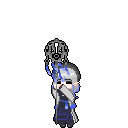
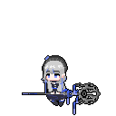
絳纓的動態不靠誇張前搖，而是靠俐落的節奏切換撐起存在感，和她的支援定位很一致。
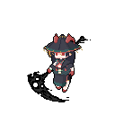
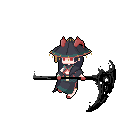
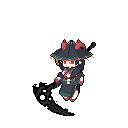
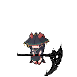
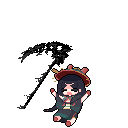
獅鈴的 GIF 能直接看出她偏高機動、偏突入的節奏，兩段技能也保留了原始切分。
懸舵的演出不只是攻擊，而是把控制與古書異象的重量感一起做進動作節拍裡。
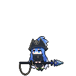
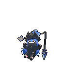
維爾莉絲的 GIF 很適合補上她在設定裡那種高等血族的從容感與壓迫感。
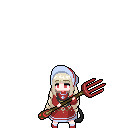
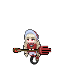
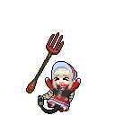
貝維塔的素材最有前線硬碰硬的感覺，很適合補強她作為護陣核心時的壓迫演出。
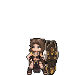
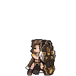
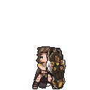
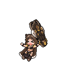
每支本地影片都對應一位角色的技能或強化攻擊，方便你直接對照企畫書裡的條件設計。
觀看她如何用降地形的方式拆掉敵方站位與高度優勢。
強化後能打出超長直線威脅，是很明確的收束手段。
重點不只是位移，而是她怎麼把隊友丟進更好的高度條件裡。
強化普攻會改成印記壓制，讓她從文書官直接變成節奏點製造者。
她的核心是先把三個位置抬成高地，再照順序把自己送進去。
強化版能切入敵人身後、打傷害、順手回復，是非常靈活的單點工具。
先看她的普通進場方式，再更容易理解後面暈眩控場的價值。
她的強化攻擊是很直接的十字暈眩控制，能把敵人回合整個鎖住。
技能會同時調整自身腳底與指定方向高度，適合做續戰前置。
強化普攻能直接回復自身生命值，是血族續戰最鮮明的展示。
把周圍壓成等級 1 並給友軍防禦，正是她扛住第一線的原因。
她的強化攻擊會消耗生命值換取極高傷害，是很典型的高風險強開。
正式版六位角色的差異，不是誰的數值更高，而是誰能在對的高度、對的順序、對的代價下把整回合撐起來。
角色設計核心